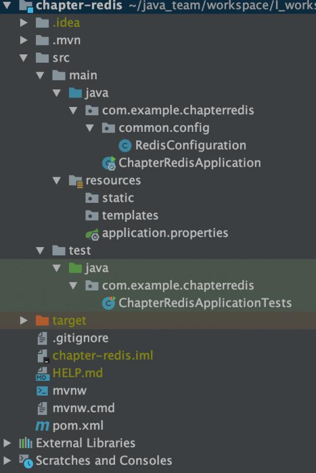

安装步骤参照网上教程，Mac安装步骤参照https://github.com/muyl/mac-docker-redis-cluster

创建Redis配置类
package com.example.chapterredis.common.config;
import org.apache.commons.pool2.impl.GenericObjectPoolConfig;
import org.slf4j.Logger;
import org.slf4j.LoggerFactory;
import org.springframework.beans.factory.annotation.Value;
import org.springframework.context.annotation.Bean;
import org.springframework.context.annotation.Configuration;
import redis.clients.jedis.HostAndPort;
import redis.clients.jedis.JedisCluster;
import java.util.HashSet;
import java.util.Set;
/**
* @author tony
*/
@Configuration
public class RedisConfiguration {
private static final Logger logger = LoggerFactory.getLogger(RedisConfiguration.class);
@Value("${spring.redis.clusterNodes}")
private String clusterNodes;
@Value("${spring.redis.password}")
private String auth;
@Value("${spring.redis.pool.maxActive}")
private Integer maxTotal;
@Value("${spring.redis.pool.minIdle}")
private Integer minIdle;
@Value("${spring.redis.pool.maxIdle}")
private Integer maxIdle;
@Value("${spring.redis.pool.maxWait}")
private Long maxWaitMillis;
@Value("${spring.redis.pool.commandTimeout}")
private int commandTimeout;
@Bean
public JedisCluster jedisCluster() {
String[] serverArray = clusterNodes.split(",");
Set<HostAndPort> nodes = new HashSet<>();
for (String ipPort : serverArray) {
String[] ipPortPair = ipPort.split(":");
nodes.add(new HostAndPort(ipPortPair[0].trim(), Integer.valueOf(ipPortPair[1].trim())));
}
if (!nodes.isEmpty()) {
String password = getAuth(auth);
logger.info("redis password:{}", password);
GenericObjectPoolConfig pool = new GenericObjectPoolConfig();
pool.setMaxTotal(maxTotal);
pool.setMinIdle(minIdle);
pool.setMaxIdle(maxIdle);
pool.setMaxWaitMillis(maxWaitMillis);
return new JedisCluster(nodes, commandTimeout, commandTimeout, 5, password, pool);
}
return null;
}
private String getAuth(String auth) {
return "".equals(auth) ? null : auth;
}
}
SpringBoot属性文件
spring.redis.clusterNodes=localhost:7000,localhost:7001,localhost:7002,localhost:7003,localhost:7004,localhost:7005
spring.redis.password=
spring.redis.pool.maxActive=5
spring.redis.pool.minIdle=5
spring.redis.pool.maxIdle=1
spring.redis.pool.maxWait=3000
spring.redis.pool.commandTimeout=5000SpringBoot启动类
package com.example.chapterredis;
import org.springframework.boot.SpringApplication;
import org.springframework.boot.autoconfigure.SpringBootApplication;
@SpringBootApplication
public class ChapterRedisApplication {
public static void main(String[] args) {
SpringApplication.run(ChapterRedisApplication.class, args);
}
}
测试类
package com.example.chapterredis;
import org.junit.Test;
import org.junit.runner.RunWith;
import org.springframework.beans.factory.annotation.Autowired;
import org.springframework.boot.test.context.SpringBootTest;
import org.springframework.test.context.junit4.SpringRunner;
import redis.clients.jedis.JedisCluster;
@RunWith(SpringRunner.class)
@SpringBootTest(classes={ChapterRedisApplication.class})
public class ChapterRedisApplicationTests {
@Autowired
private JedisCluster jedisCluster;
@Test
public void test2() {
jedisCluster.set("aaa","123");
System.out.println(jedisCluster.get("aaa"));
}
}
https://gitee.com/shanksV/chapter-redis.git
比你优秀的人比你还努力，你有什么资格不去奋斗!!!